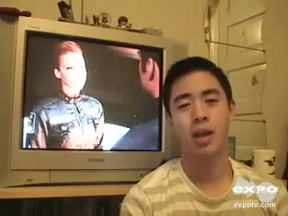
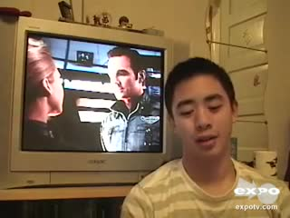
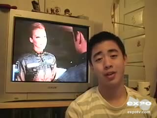

下列时间来自 CTC；结构检查与实际听审分别记录。本页不自动批准任何词时。参考帧按真实解码 PTS 选取，只展示视频上下文；不证明它们对应模型官方视觉特征行。
原文：I would be ashamed to have made this film if I was a director
音频起点 0.000000s；视频时长 11.424s；边界/顺序异常 0。复核后填写 data/review/word_times.csv 的审核列，再运行 map 和 report。



| word_id | 原词 | 候选区间 | 状态 | 播放 |
|---|---|---|---|---|
| 1 | would | 0.499–0.627s | 主文本证据 · 待听审 / algorithm_accepted | |
| 3 | ashamed | 0.756–1.013s | 主文本证据 · 待听审 / algorithm_accepted | |
| 8 | film | 3.748–3.941s | 主文本证据 · 待听审 / algorithm_accepted | |
| 0 | I | 0.225–0.499s | 待听审 / algorithm_accepted | |
| 2 | be | 0.627–0.756s | 待听审 / algorithm_accepted | |
| 4 | to | 2.717–3.233s | 待听审 / algorithm_accepted | |
| 5 | have | 3.233–3.330s | 待听审 / algorithm_accepted | |
| 6 | made | 3.330–3.523s | 待听审 / algorithm_accepted | |
| 7 | this | 3.523–3.748s | 待听审 / algorithm_accepted | |
| 9 | if | 3.941–4.392s | 待听审 / algorithm_accepted | |
| 10 | I | 4.392–4.520s | 待听审 / algorithm_accepted | |
| 11 | was | 4.520–4.649s | 待听审 / algorithm_accepted | |
| 12 | a | 4.649–4.746s | 待听审 / algorithm_accepted | |
| 13 | director | 4.746–5.099s | 待听审 / algorithm_accepted |